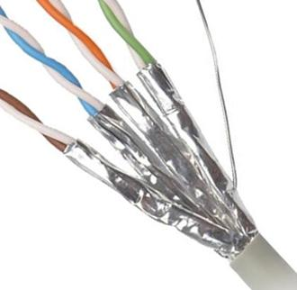
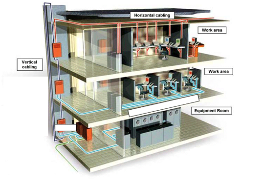

Apuntes de consulta de Redes Locales
Material de la Unidad 2 para el alumnado del ciclo formativo de grado medio de Sistemas Microinformáticos y Redes. Aquí encontrarás los contenidos de las presentaciones de clase en formato web, con sus imágenes, tablas y actividades.

UD2 · Parte 1
Elementos y espacios de una LAN
Cómo viajan los datos por los distintos medios y qué componentes forman una red local.
- Transmisión: atenuación, ancho de banda, velocidad
- Medios guiados: par trenzado, coaxial y fibra óptica
- LAN mixta: de la OLT al ordenador
- Medios no guiados e inalámbricos

UD2 · Parte 2
Sistema de Cableado Estructurado
Cómo se organiza el cableado de un edificio: normas, subsistemas y elementos.
- Características del SCE
- Niveles jerárquicos: puesto de trabajo, horizontal, vertical…
- Canalizaciones, rosetas, racks y patch panels
- Etiquetado según EIA/TIA-606